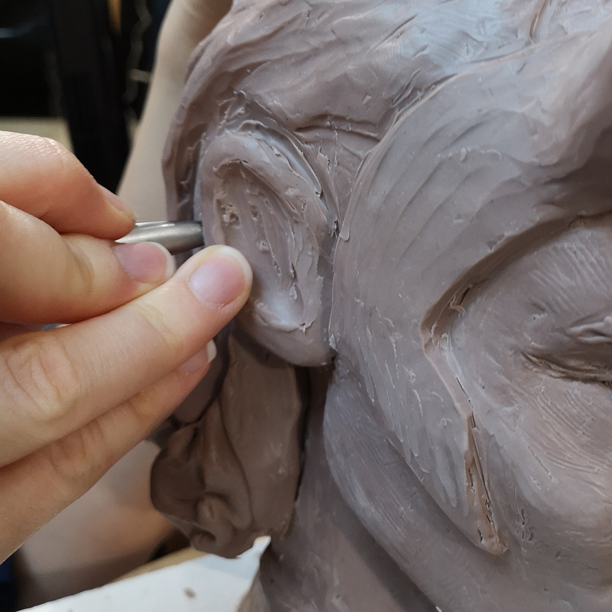
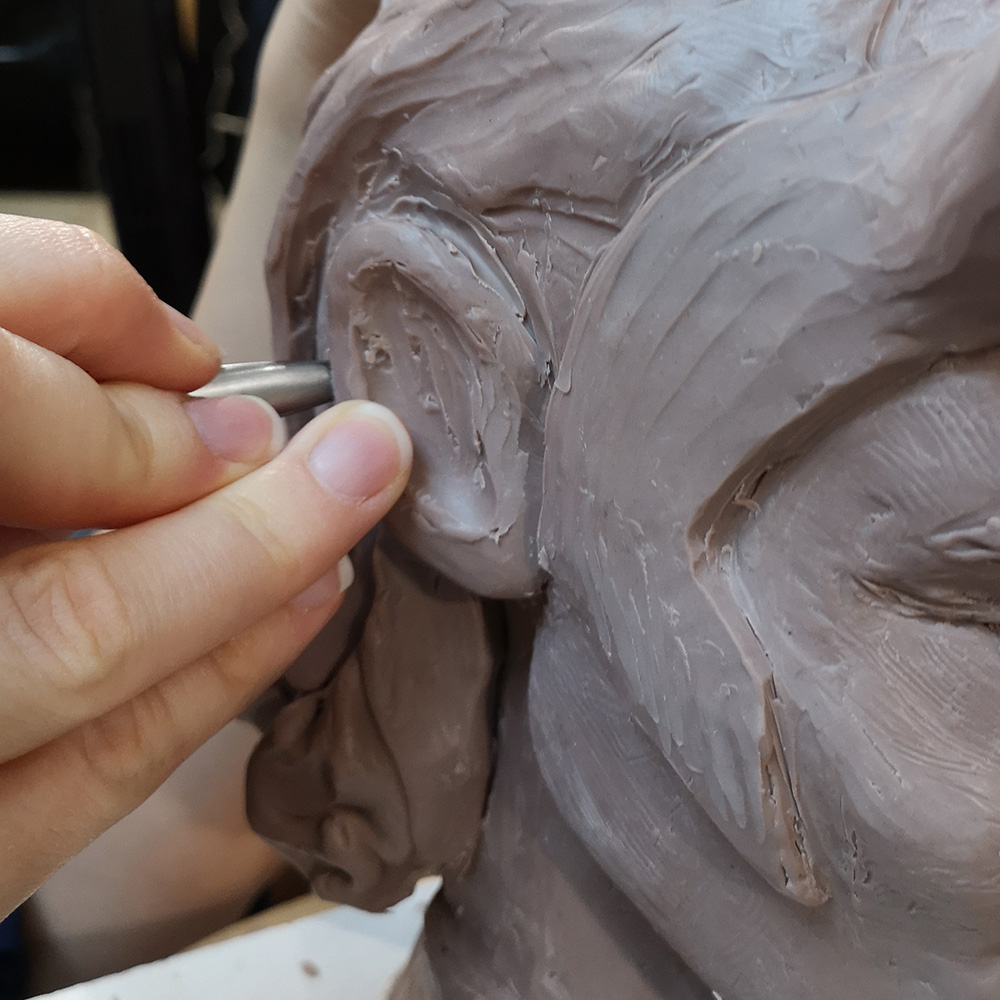

А вы знаете какой магией обладают наши руки?
Они могут шить, вязать, вышивать, плести, крутить, ткать, прясть, лепить, рисовать, расписывать, вытачивать, ковать и это малая часть возможностей наших великолепных рук. Мы владеем искусством создания и выполнения вещей и предметов из всевозможных материалов с помощью разнообразных инструментов и в различных техниках. И называется это рукоделием.
 

Из детства
Меня зовут Наталия. И как скажет каждая вторая мастерица, рукодельничаю, сколько себя помню.
Первое мое четкое и яркое воспоминание о таком занятии в возрасте где-то 4-5 лет — мама сидит на диване, один край полотна зажат коленями, второй край натягивает рукой и вышивает. Я же сижу напротив и пытаюсь сама что-то вышить на карманчике своей белой кофты цветной шерстяной ниткой привязанной к маленькому гвоздику.
Рядом с мамой целая гора разноцветных ниток, которая выглядела сложной конструкцией, как мне тогда маленькой казалось. Они были мягкими, слегка пушистыми и самых разных оттенков. Мне очень нравилось в них копаться, распутывать, разбирать по цветам. Хранились нитки в узелке, квадратный отрез ткани, уголки которого связывались по диагонали. Такой узелок мог быть размером с подушку.


Еще помню огромный деревянный ткацкий станок, который стоял в большой дальней комнате в доме прадеда. Прадедушку я тоже хорошо помню, особенно его большие белые усы и улыбающиеся глаза.
Станок же представлял из себя какое-то неимоверное сооружение. Бесконечное количество нитей в горизонтальном и вертикальном направлении, перекладины, мощные педали и отполированный до блеска челнок. На нём прабабушка ткала полотно для одежды. А на моей памяти бабушка ткала льняные длинные рушники для повседневного использования. Они были грубоваты, так как нитки тоже делались вручную (сами пряли, сами ткали). Я тоже старалась принимать участие в этом волшебном процессе и выбирала цветные нитки, которые вплетались в начале и конце рушника.
На фото ниже домотканый рушник. Он был соткан моей бабаушкой более сорока лет назад. Ширина 33 см, длинна 1,65 м. Он умеренно грубый, но приятный на ощупь и был совсем небольшое время в использовании. Теперь хранится у меня. На крайнем фото современный ткацкий станок. Он небольшой, но в нем такое же неимоверное количество нитей, рамки, педали. На таком можно соткать полотно и для одежды.


Удовольствие от процесса
Сам процесс создания приносит немало удовольствия. А когда отрезаем ниточку последнего стежка, убираем намётку или срезаем застывшую капельку от горячего клея, выворачиваем с изнанки или расправляем лепесточки, встряхиваем, бережно разглаживаем ладошками, а потом любуемся на свое произведение и говорим с радостной улыбкой: - Ну вот и готово! Стрелка измерителя удовольствия ложится в положение максимум.

Все мы рукодельницы
Ловко владеем спицами и крючком, виртуозно перебираем коклюшками, вышиваем во всевозможных техниках (к примеру невероятной красоты сажение по бели - старинная техника объемной вышивки), делаем глиняную посуду не просто удобную в использовании, но и дарящую эстетическое наслаждение, шьём из всевозможных материалов, а из обрезков можем сделать украшения, аксессуары, скрутить куколку или же собрать целое лоскутное одеяльце, плавим стекло, вытачиваем из дерева и еще много всяких работ мы выполняем с помощью самых распространенных и незаменимых инструментов - рук.